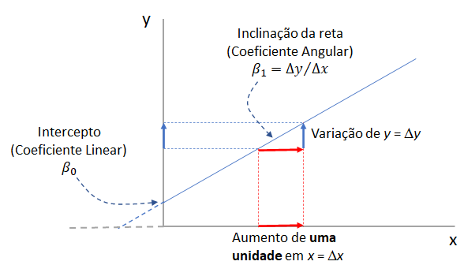
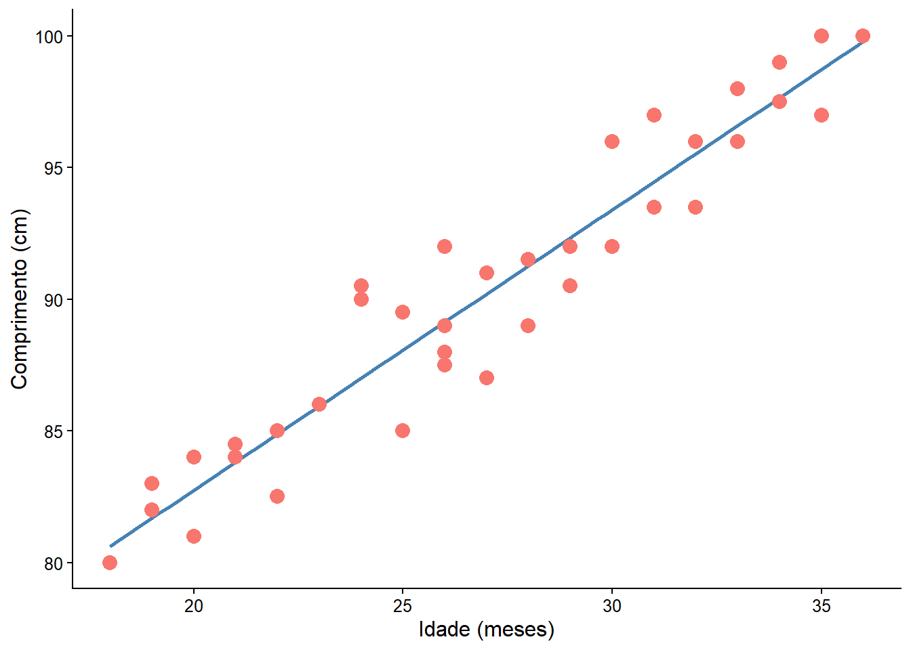
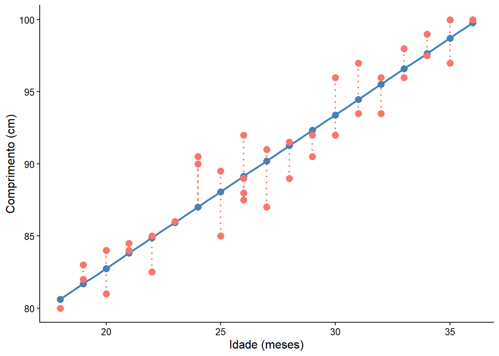
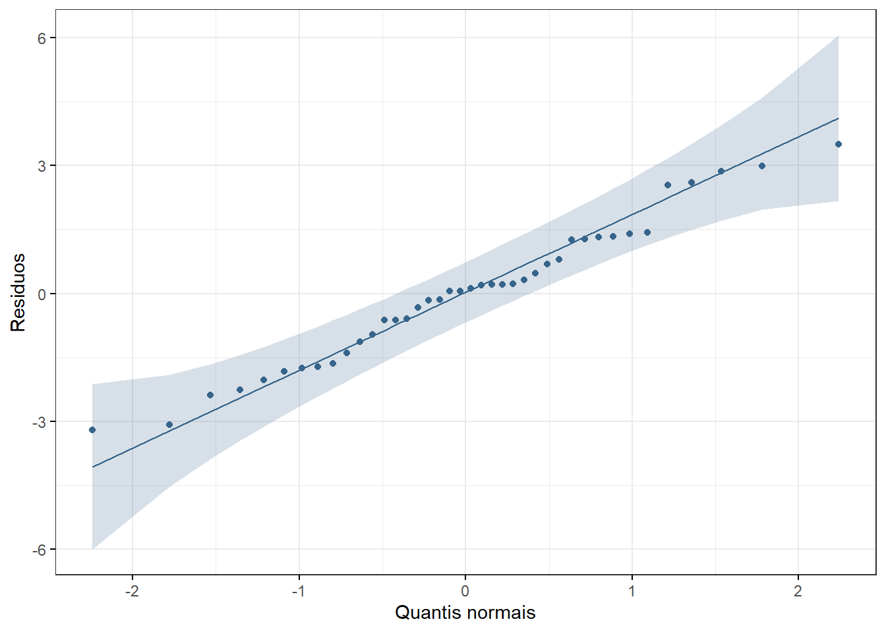
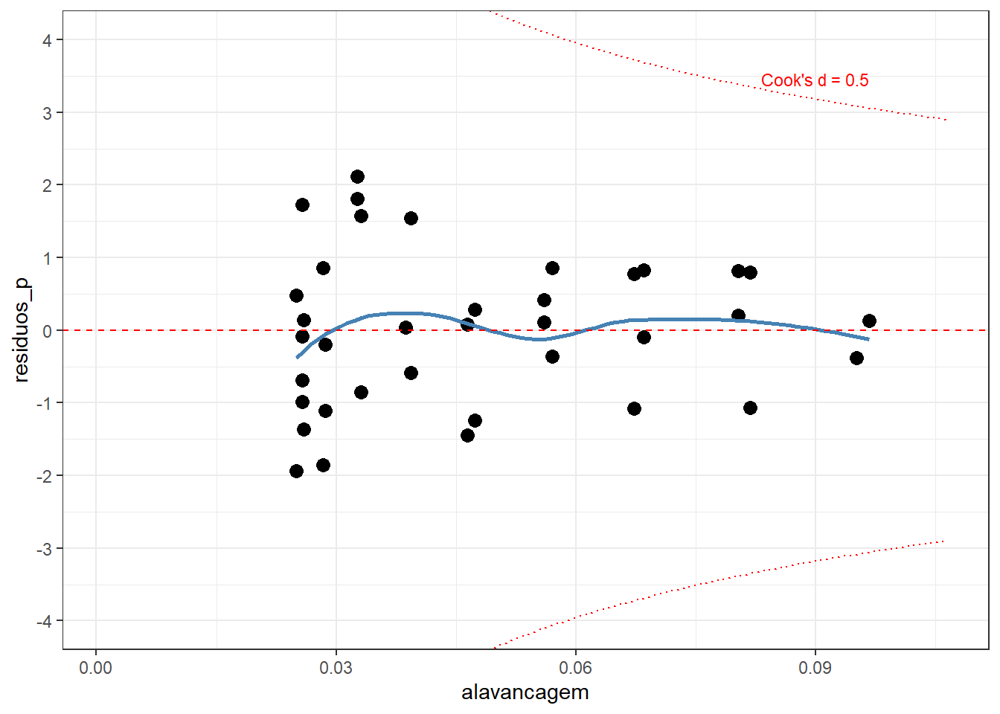
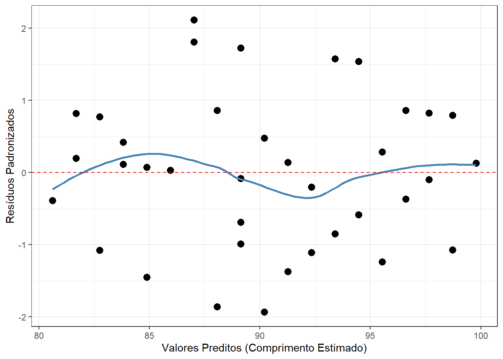
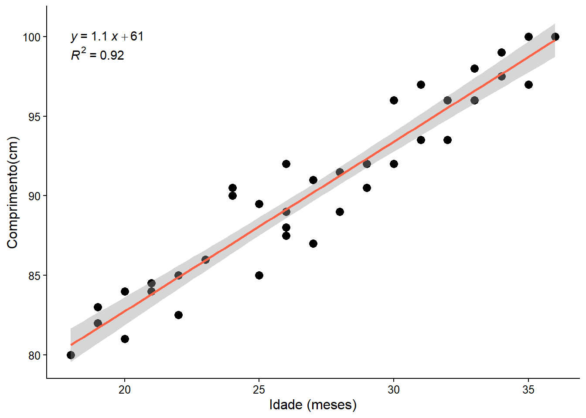

pacman::p_load(car,
flextable,
ggpubr,
knitr,
lmtest,
readxl,
rstatix,
tidyverse)18 Regressão Linear Simples
18.1 Pacotes usados neste capítulo
18.2 Introdução
A regressão linear simples, assim como a correlação, é uma técnica usada para explorar a natureza da relação entre duas variáveis aleatórias contínuas. A principal diferença entre esses dois métodos analíticos é que a regressão permite investigar a alteração em uma variável, chamada resposta, correspondente a uma determinada alteração em outra, conhecida como variável explicativa. A regressão é um modelo matemático que permite a predição de uma variável resposta a partir de uma outra variável explicativa. A análise de correlação quantifica a força da relação entre as variáveis, tratando-as simetricamente (1).
A regressão linear simples é chamada assim, porque existe apenas uma variável independente. Se houver mais de uma variável independente, é chamada de regressão múltipla.
A representação matemática do modelo de regressão linear populacional é descrita pela equação da reta de melhor ajuste em um conjunto de pares de dados (x, y) em um gráfico de dispersão de pontos.
\[y = \beta_{0} + \beta_{1}x\]

A inclinação da reta de regressão (\(\beta_{1}\)) determina a variação de y para cada unidade de variação de x e recebe o nome de coeficiente angular ou de regressão. O ponto de interceptação da reta com y quando x é igual a zero é \(\beta_{0}\) e é denominado de coeficiente linear (Figura 18.1). A equação da reta de regressão amostral que estima a reta de regressão populacional é igual a:
\[\hat {y} = b_{0} + b_{1}x\]
A reta do diagrama de dispersão da Figura 18.1 é a melhor reta de ajuste aos dados.
18.3 Dados usados no exemplo
Serão usados os mesmos dados do exemplo da Correlação (Seção 17.4). A função read_excel do pacote readxl carregará o arquivo.
dados <- read_excel("dados/dadosReg.xlsx") |>
select(idade, comp)
str(dados)tibble [40 × 2] (S3: tbl_df/tbl/data.frame)
$ idade: num [1:40] 18 18 19 19 20 20 21 21 22 22 ...
$ comp : num [1:40] 80 80 83 82 84 81 84.5 84 85 82.5 ...Para revisar as estatísticas descritivas do conjunto de dados, será executado o seguinte código:
dados |>
rstatix::get_summary_stats(idade,
comp,
type = "mean_sd")# A tibble: 2 × 4
variable n mean sd
<fct> <dbl> <dbl> <dbl>
1 idade 40 27.0 5.41
2 comp 40 90.2 6.0018.4 Resíduos
No exemplo usado na correlação (Seção 17.4), verificou-se que existe uma correlação linear entre a idade e o comprimento de crianças, usando uma amostra de 40 crianças entre 18 e 36 meses. A correlação de Pearson foi muito forte (r = 0,96, p < 0,00001). Esta relação linear pode ser descrita pela reta, mostrada na Figura 18.2.
ggplot2::ggplot(dados,
aes(x = idade,
y = comp,
color = "tomato")) +
geom_smooth(method = "lm",
se = FALSE,
color = "steelblue") +
geom_point(size = 3.5) +
theme_classic() +
xlab("Idade (meses)") +
ylab("Comprimento (cm)") +
theme(text = element_text(size = 12)) +
theme(legend.position = "none")
Não é possível traçar uma reta que passe por todos os pontos. Esta reta ideal descreveria uma correlação perfeita, que não é o caso. Pode haver várias retas, a reta calculada pela regressão linear é aquela que promove o melhor ajuste, ou seja, é aquela cuja distância dos pontos até a reta é a menor possível.
Os resíduos são a diferença entre o valor observado e o valor previsto pelo modelo de regressão linear, construído anteriormente (mod_reg). A técnica estatística para achar a melhor reta que ajusta um conjunto de dados é denominada de método dos mínimos quadrados (Ordinary Least Square). A melhor reta ajustada é aquela em que a soma dos quadrados da distância de cada ponto (soma dos quadrados residual) em relação à reta é minimizada.
Para se obter os resíduos, ajusta-se um modelo de regressão, usando a função lm()1, nativa do R:
1 lm = linear model
mod_reg <- lm(comp ~ idade, data = dados)O modelo fornece uma série de variáveis que podem ser visualizadas com:
ls(mod_reg) [1] "assign" "call" "coefficients" "df.residual"
[5] "effects" "fitted.values" "model" "qr"
[9] "rank" "residuals" "terms" "xlevels" Assim, as variáveis residuos e preditos podem ser criadas no dataframe dados da seguinte maneira:
dados$residuos <- residuals(mod_reg)
dados$preditos <- predict(mod_reg) Usando essas variáveis, pode-se criar o gráfico da Figura 18.3 que mostra os resíduos do modelo:
ggplot2::ggplot(dados,
aes(x = idade,
y = comp,
color = "tomato")) +
geom_smooth(method = "lm",
se = FALSE,
color = "steelblue") +
geom_segment(aes(xend = idade,
yend = preditos),
linewidth = 0.8,
linetype = "dotted") +
geom_point(aes(y = preditos),
shape = 19,
size = 3,
colour = "steelblue") +
geom_point(size = 3) +
theme_classic() +
xlab("Idade (meses)") +
ylab("Comprimento (cm)") +
theme(text = element_text(size = 12)) +
theme(legend.position = "none")
Uma boa maneira de testar a qualidade do ajuste do modelo é observar os resíduos (2) ou as diferenças entre os valores reais (pontos vermelhos) e os valores previstos (pontos azuis). A reta de regressão, em azul no gráfico, representa os valores previstos. A linha vertical pontilhada da linha reta até o valor dos dados observados é o resíduo.
A ideia aqui é que a soma dos resíduos seja aproximadamente zero ou o mais baixo possível. Na vida real, a maioria dos casos não seguirá uma linha perfeitamente reta, portanto, resíduos são esperados. Na saída do resumo da função lm() em (mod_reg$residuals) aparecem estatísticas descritivas sobre os resíduos do modelo (residuals), elas mostram como os resíduos são aproximadamente zero. Pode-se observar isso, usando a função summary () e sum():
summary(mod_reg$residuals) Min. 1st Qu. Median Mean 3rd Qu. Max.
-3.20326 -1.20326 0.08994 0.00000 1.25849 3.49221 sum(mod_reg$residuals)[1] -3.538836e-15Como se observa, a soma dos resíduos é praticamente igual a zero (\(-3{,}54 \times 10^{-15}\)).
18.5 Análise dos pressupostos do modelo de regressão
18.5.1 Avaliação da normalidade dos resíduos
Ao analisar os pressupostos da correlação, foi realizada a avaliação da normalidade nos dados brutos. Na regressão, o foco muda quase que totalmente para os resíduos (os erros do modelo: \(y - \hat{y}\)), porque o objetivo é prever y a partir de x .
O correto é avaliar os pressupostos sobre os resíduos do modelo como um todo. Estes resíduos encontram-se, como visto, na variável resíduos extraída do modelo de regressão (mod_reg).
Dessa forma, a função shapiro_test() do pacote rstatix:
dados |>
rstatix::shapiro_test(residuos)# A tibble: 1 × 3
variable statistic p
<chr> <dbl> <dbl>
1 residuos 0.979 0.655Pode-se observar isso, gerando o QQ plot dos resíduos com ggpubr::ggqqplot():
ggpubr::ggqqplot(data = dados,
x = "residuos",
color = "steelblue4",
xlab = "Quantis normais",
ylab = "Residuos",
ggtheme = theme_bw())
A saída do teste de Shapiro-Wilk mostra um valor p > 0,05 e pode-se decidir que não há evidência de violação da normalidade. Fato reforçado pela Figura 18.4 que mostra que os pontos acompanham a reta de referência.
18.5.2 Pesquisa de valores atípicos nos resíduos
Uma maneira de avaliar os valores atípicos, é transformar os resíduos em resíduos padronizados e verificar a distribuição desses, sabendo que em uma amostra normalmente distribuída, ao redor de 95% dos valores estão entre –1,96 e +1,96 desvios padrão; 99% deve estar entre –2,58 e +2,58 e quase todos (99,9%) devem se situar entre –3,09 e +3,09 desvios padrão 2.
2 Regra prática: Resíduos além de \(\pm 2\) acendem um sinal amarelo (merecem atenção) e resíduos além de \(\pm 3\) são formalmente classificados como outliersestatísticos (sinal vermelho).
Existe uma função denominada rstandard(), também nativa do R, que padroniza os resíduos do mod_reg. Assim, pode-se criar uma variável no conjunto dados com esses resíduos padronizados e fazer um sumário, usando a função summary(). Esta função exibirá a estatística dos 5 números mais a média para os resíduos padronizados:
dados$residuos_p <- rstandard(mod_reg)
summary(dados$residuos_p) Min. 1st Qu. Median Mean 3rd Qu. Max.
-1.9327846 -0.7271178 0.0548028 0.0006059 0.7779208 2.1154118 A saída mostra que não há resíduos padronizados com um valor absoluto maior que 3. Acima deste valor existe motivo de preocupação porque em uma amostra média é improvável que aconteça um valor tão alto por acaso (3).
18.5.2.1 Distância de Cook
Olhar apenas para o resíduo padronizado mede o quão distante o ponto está da reta na vertical (y). Mas na regressão linear, um outlier perigoso é aquele que tem o poder de distorcer a reta. Por isso, é interessante avaliar métricas complementares como a distância de Cook. Ela avalia o quanto a sua reta de regressão mudaria se aquele ponto específico fosse deletado.
Pontos com Distância de Cook maiores que 1 (ou maiores que \(4/n\), onde \(n\) é o tamanho da amostra) são considerados pontos de alta influência. Mesmo que o resíduo padronizado não seja gigante, se ele altera a reta, ele é um outlier problemático.
A distância de Cook pode ser obtida pela função cooks.distance() com o modelo de regressão:
dados$d_cook <- cooks.distance(mod_reg)
summary(dados$d_cook) Min. 1st Qu. Median Mean 3rd Qu. Max.
2.443e-05 1.511e-03 1.158e-02 1.992e-02 3.846e-02 7.545e-02 n = nrow(dados)
limite <- 4/n
limite[1] 0.1A saída do sumário mostra que não existem valores de distância de Cook superiores ao limite definido. Isso pode ser observado na Figura 18.5.
dados$alavancagem <- hatvalues(mod_reg)
# 1. Número de parâmetros(intercepto + inclinação)
k <- 2 # Número de parâmetros
# 2. Criar a função matemática correta baseada no limite dos dados
cook_limite <- function(leverage, cook_d, k_param = k) {
# Adiciona um tratamento para evitar divisão por zero
ifelse(leverage <= 0, NA, sqrt((cook_d * k_param * (1 - leverage)) / leverage))
}
# 3. Gerar o grid focando na escala real da sua alavancagem (de 0 a 0.10)
grid_cook <- data.frame(alavancagem = seq(0.001, max(dados$alavancagem) * 1.1, length.out = 200)) |>
mutate(
cook_05_pos = cook_limite(alavancagem, 0.5),
cook_05_neg = -cook_limite(alavancagem, 0.5)
)
# 4. Montar o gráfico definitivo
dados |>
ggplot(aes(x = alavancagem, y = residuos_p)) +
# Linhas da Distância de Cook
geom_line(data = grid_cook, aes(y = cook_05_pos), linetype = "dotted", color = "red", na.rm = TRUE) +
geom_line(data = grid_cook, aes(y = cook_05_neg), linetype = "dotted", color = "red", na.rm = TRUE) +
# Texto indicador ajustado para os dados
annotate("text",
x = max(dados$alavancagem),
y = cook_limite(max(dados$alavancagem), 0.5) + 0.4, # Linha + uma folguinha para cima
label = "Cook's d = 0.5",
color = "red",
size = 3,
hjust = 1) +
# Dados e a curva loess
geom_point(size = 3) +
geom_smooth(method = "loess", se = FALSE, color = "steelblue") +
geom_hline(yintercept = 0, linetype = 'dashed', col = 'red') +
# Zoom sem quebrar o cálculo das linhas
coord_cartesian(ylim = c(-4, 4)) +
# Ajuste fino das quebras do eixo Y para melhor a estética visual
scale_y_continuous(breaks = seq(-5, 5, by = 1)) +
labs(x = "alavancagem", y = "residuos_p") +
theme_bw()
Resumindo:
Ausência de pontos influentes: A linha vermelha de Cook está lá no topo, isolada, e nenhum ponto sequer ameaça chegar perto dela.
Linearidade bem resolvida: A linha azul na Figura 18.5 oscila muito timidamente bem próxima da linha vermelha tracejada do zero, mostrando que não há desvios sistemáticos.
Boa distribuição: A grande massa de dados tem resíduos padronizados confortavelmente situados entre -2 e 2.
18.5.3 Homocedasticidade dos resíduos
Na regressão linear simples, a análise da homocedasticidade significa verificar se a variabilidade dos resíduos (erros) permanece constante ao longo de todos os valores previstos pelo modelo. Em termos simples: o modelo não pode ser mais preciso em uma idade e essencialmente um palpite em outra.
Para fazer essa análise de forma robusta na prática, você deve combinar a análise visual (a mais importante e recomendada) com um teste estatístico formal.
A melhor forma de diagnosticar a homocedasticidade é gerando os gráficos baseados nos resíduos do modelo. Plotar os Resíduos Padronizados versus Valores Ajustados (Fitted Values), variável preditos no conjunto dados.
dados |>
ggplot(aes(x = preditos, y = residuos_p)) +
geom_point(size = 3) +
geom_smooth(method = "loess", se = FALSE, color = "steelblue") +
geom_hline(yintercept = 0, linetype = "dashed", color = "red") +
labs(x = "Valores Preditos (Comprimento Estimado)",
y = "Resíduos Padronizados") +
theme_bw()
Como interpretar o gráfico?
Cenário Ideal (Homocedasticidade): Os pontos pretos devem estar espalhados de forma aleatória e uniforme acima e abaixo da linha horizontal vermelha (Figura 18.6), formando uma “banda” ou “retângulo” de largura constante. A linha azul deve ficar o mais reta e horizontal possível perto do zero (Figura 18.6).
Problema (Heterocedasticidade): Se a dispersão dos pontos começar bem estreita de um lado e abrir como um funil, cone ou megafone à medida que os valores preditos aumentam, a homocedasticidade foi violada.
Concluindo a avaliação visual:
Dispersão em Banda Uniforme: A “nuvem” de pontos pretos está distribuída de forma homogênea e retangular ao longo de todo o eixo x (desde os valores estimados de 80 cm até 100 cm). Não há nenhuma evidência daquele formato clássico de “funil”, “megafone” ou “cone” que denunciaria a heterocedasticidade.
Amplitude Constante: A variabilidade vertical dos pontos (no eixo y) se mantém quase idêntica do início ao fim do gráfico, flutuando estavelmente dentro do intervalo seguro de \(-2\) a \(+2\) desvios-padrão.
Linha de Tendência Estável: A linha azul oscila de forma muito sutil e comportada em torno da linha tracejada vermelha do zero. Essa leve oscilação é perfeitamente normal e esperada devido à flutuação de pequenas amostras, não indicando nenhum desvio sistemático de variância ou falta de linearidade.
Completando a avaliação visual, o teste estatístico mais amplamente utilizado para regressão linear é o Teste de Breusch-Pagan. Esse teste não é nativo do R, mas está presente no pacote lmtest (4):
lmtest::bptest(mod_reg)
studentized Breusch-Pagan test
data: mod_reg
BP = 0.049988, df = 1, p-value = 0.8231A homocedasticidade do modelo foi avaliada visualmente por meio do gráfico de dispersão dos resíduos padronizados versus os valores preditos, mostrando uma distribuição uniforme da variância. O pressuposto foi confirmado formalmente pelo teste de Breusch-Pagan (\(\chi^2 = \text{0.049988}\), \(p > 0,05\)).
18.5.4 Independência dos resíduos
Os resíduos no modelo devem ser independentes, ou seja, não devem ser correlacionados entre si. Para verificar isso, pode-se executar o teste Durbin-Watson - teste dw (5), utilizando a função car::durbinWatsonTest() do pacote car. O teste retorna um valor entre 0 e 4. Um valor maior que 2 indica uma correlação negativa entre resíduos adjacentes, enquanto um valor menor que 2 indica uma correlação positiva. Se o valor for dois, é provável que exista independência. Existe uma sugestão de que valores abaixo de 1 ou mais de 3 são um motivo definitivo de preocupação (3). É importante mencionar que o teste tem como pressuposto a normalidade dos dados.
car::durbinWatsonTest(mod_reg) lag Autocorrelation D-W Statistic p-value
1 -0.1044054 2.204843 0.664
Alternative hypothesis: rho != 0Na saída do teste o valor p > 0,05 e a estatística DW é igual a 2,2, não se rejeita a hipótese nula de independência (rho = 0).
18.6 Tamanho amostral na regressão
O tamanho da amostra deve ser suficiente para suportar o modelo de regressão. É importante coletar dados suficientes para obter um modelo de regressão confiável. O tamanho da amostra necessário para suportar um modelo depende do valor do coeficiente de correlação do modelo (no caso da correlação linear simples é o r de Pearson) e do número de variáveis incluídas.
A Tabela 18.1 mostra o número de participantes necessários em modelos com 1 a 4 preditores independentes. Como se observa, o requisito de tamanho da amostra aumenta com o número de variáveis preditoras (6).
Número de Variáveis Preditoras | ||||
|---|---|---|---|---|
r de Pearson | Uma | Duas | Três | Quatro |
0.2 | 190 | 230 | 265 | 290 |
0.3 | 80 | 100 | 115 | 125 |
0.4 | 45 | 55 | 65 | 70 |
Existem muitas regras práticas, sugerindo o tamanho da amostra. Uma delas, diz que se deve ter 10 a 15 casos por variável preditora no modelo. Entretanto, essas regras podem ser duvidosas e o melhor é calcular o tamanho amostral baseado no tamanho do efeito, usando, por exemplo o site StatToDo ou com o software GPower 3.1.9.7 (7).
18.7 Interpretação do modelo de regressão linear simples
O modelo linear já foi realizado (Seção 18.4) e será repetido aqui para facilitar a visualização. A função summary() imprime o resumo do modelo:
mod_reg <- lm (comp ~ idade, dados)
summary (mod_reg)
Call:
lm(formula = comp ~ idade, data = dados)
Residuals:
Min 1Q Median 3Q Max
-3.2033 -1.2033 0.0899 1.2585 3.4922
Coefficients:
Estimate Std. Error t value Pr(>|t|)
(Intercept) 61.44408 1.36466 45.02 <2e-16 ***
idade 1.06515 0.04967 21.45 <2e-16 ***
---
Signif. codes: 0 '***' 0.001 '**' 0.01 '*' 0.05 '.' 0.1 ' ' 1
Residual standard error: 1.678 on 38 degrees of freedom
Multiple R-squared: 0.9237, Adjusted R-squared: 0.9217
F-statistic: 459.9 on 1 and 38 DF, p-value: < 2.2e-16A saída da função summary(), primeiro apresenta como o modelo foi obtido e, em seguida, resume os resíduos do modelo. Por último, tem-se os Coeficientes:
- As estimativas (Estimate) para os parâmetros do modelo - o valor do intercepto y (neste caso, 61,44) e o efeito estimado da idade sobre o comprimento (1,1)- significam que para cada unidade de aumento na idade se espera um aumento de 1,1 cm no comprimento.
- O erro padrão dos valores estimados (Std. Error).
- A estatística de teste (t value)
- O valor P (Pr (>| t |)), também conhecido como a probabilidade de encontrar a estatística t fornecida se a hipótese nula de nenhuma correlação for verdadeira.
- As três linhas finais são os diagnósticos do modelo - o mais importante a observar é o valor p (\(2,2\times 10^{-16}\)), que indica se o modelo se ajusta bem aos dados.
A partir desses resultados, pode-se dizer que existe uma correlação positiva significativa entre idade e comprimento (valor P < 0,001), com um aumento de 1,1 cm no comprimento para cada aumento de 1 mês na idade , possibilitando a previsão do comprimento da criança conhecendo a idade.
Estes dados são empregados para formular a equação do modelo de regressão da seguinte maneira:
\[\hat {y} = 61,44 + 1,1 x\]
O erro padrão das estimativas são fornecidos. Esses dados permitem calcular o IC95%. Ou pode-se usar a função confint() do pacote stats, que será colocada dentro da função round() para arredondar os valores até um dígito.
round (confint (mod_reg, level = 0.95), 1) 2.5 % 97.5 %
(Intercept) 58.7 64.2
idade 1.0 1.2Dessa forma, é possível prever que uma criança de 30 meses, de acordo com o modelo, terá o seguinte comprimento:
comp_30m <- 61.4 + 1.1 * 30
comp_30m[1] 94.4lim.sup <- 64.2 + 1.2*30
lim.inf <- 58.7 + 1.0*30
print (c(lim.inf, lim.sup))[1] 88.7 100.2Ou seja, espera-se que uma criança tenha, aos 30 meses de idade, um comprimento médio de 94,4 cm (IC95%: 88,7-100,2)
18.8 Visualização dos resultados
Será obtido um gráfico de dispersão com a reta de regressão e seu intervalo de confiança de 95% (Figura 18.7). Além disso, adicionou-se a equação do modelo3 de regressão (o R arredondou os valores), juntamente com o coeficiente de determinação \(R^{2}\).
3 Usou a função stat_regline_equation() do pacote ggpubr.
ggplot (dados, aes (x = idade, y = comp)) +
geom_point (size = 3) +
geom_smooth (method = "lm", se = TRUE, color = "tomato") +
stat_regline_equation(label.y = 100, aes(label = after_stat(eq.label))) +
stat_regline_equation(label.y = 99, aes(label = after_stat(rr.label))) +
theme_classic () +
xlab ("Idade (meses)") +
ylab ("Comprimento(cm)") +
theme (text = element_text (size = 12))
No gráfico, o intervalo de previsão médio de 95% em torno da reta de regressão é um intervalo de confiança de 95%, ou seja, a área na qual há 95% de certeza de que a reta de regressão verdadeira se encontra (8). Esta banda de intervalo é levemente curvada porque os erros na estimativa do intercepto e da inclinação são incluídos em adição ao erro na previsão da variável desfecho.
Se for observado, o IC95% da reta de regressão obtida pelo ggplot2 difere um pouco do IC95% da função confint(). Isto ocorre porque:
- quando se usa
geom_smooth(method = "lm", se = TRUE), o intervalo de confiança gerado é baseado na incerteza da previsão média da regressão. Ou seja, ele mostra a faixa onde se espera que a média da variável dependente (comp) esteja para um determinado valor da variável independente (idade) e
- quando se usa a função
confint(), ela retorna o intervalo de confiança dos coeficientes do modelo de regressão. Ou seja, ela fornece a incerteza associada aos parâmetros estimados (incluindo o intercepto e os coeficientes das variáveis preditoras).
A principal diferença, portanto, é que o intervalo de confiança do ggplot2 reflete a incerteza da linha de regressão ajustada, enquanto confint() fornece a incerteza dos parâmetros do modelo.
Referências
1.
Sedgwick P. Correlation versus linear regression. BMJ. 2013;346.
2.
Kim H-Y. Statistical notes for clinical researchers: simple linear regression 3–residual analysis. Restorative dentistry & endodontics. 2019;44(1).
3.
Field A, Miles J, Field Z. Regression. Em: Discovering statistics using R. Sage Publications, Ltd; 2012. p. 266–76.
4.
Hothorn T, Zeileis A, Farebrother RW, et al. Package «lmtest». Testing linear regression models https://cran r-project org/web/packages/lmtest/lmtest pdf Accessed. 2015;6.
5.
Durbin J, Watson GS. Testing for serial correlation in least squares regression: I. Biometrika. 1950;37(3/4):409–28.
6.
Peat J, Barton B. Correlation and regression. Em: Medical statistics : a guide to SPSS, data analysis, and critical appraisal. New York, NY: John Wiley & Sons; 2014. p. 209.
7.
Faul F, Erdfelder E, Lang A-G, Buchner A. G* Power 3: A flexible statistical power analysis program for the social, behavioral, and biomedical sciences. Behavior research methods. 2007;39(2):175–91.
8.
Altman DG, Gardner MJ. Statistics in Medicine: Calculating confidence intervals for regression and correlation. British Medical Journal (Clinical research ed). 1988;296(6631):1238.